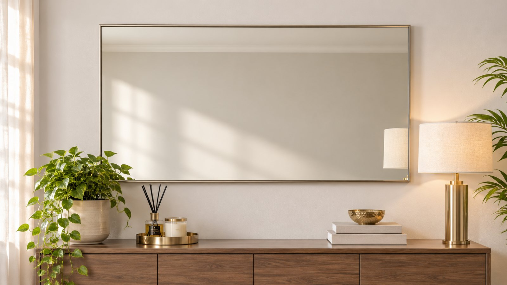
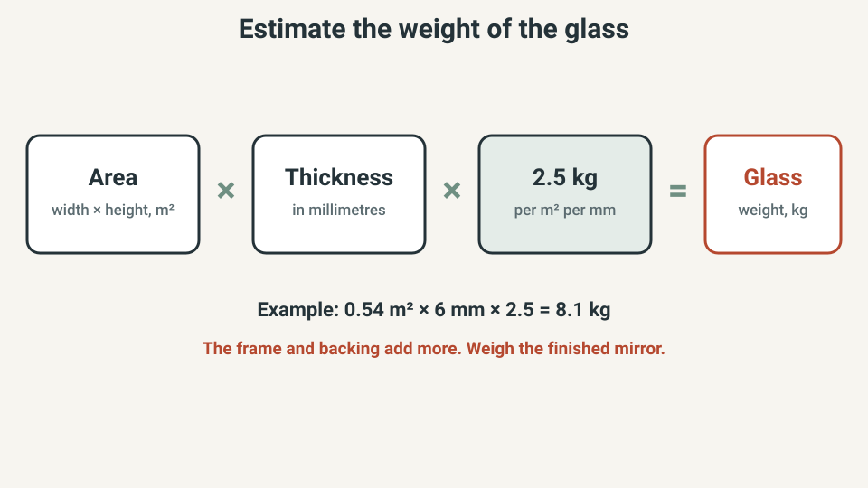
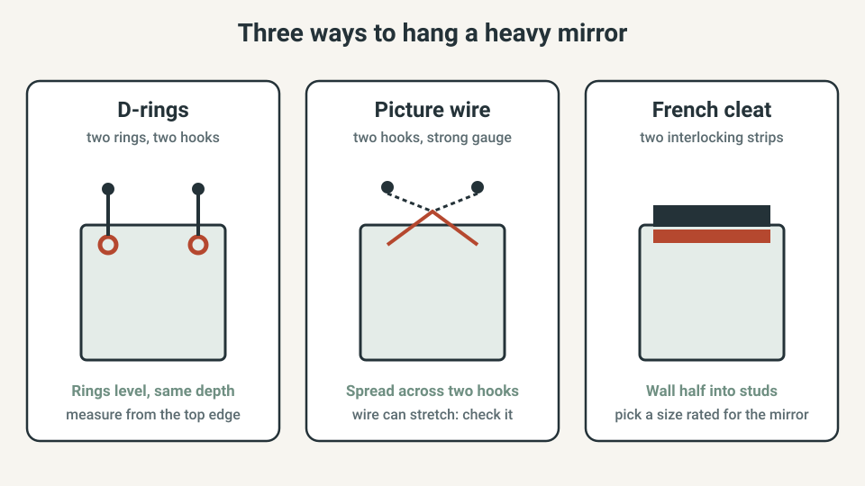
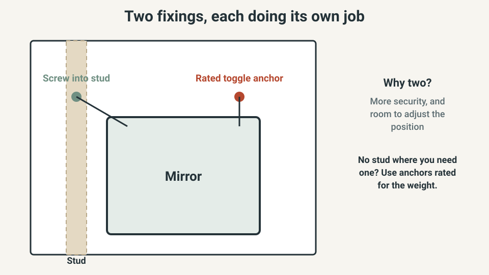

WEEKEND PROJECTS · WALL HANGING
How to Hang a Heavy Mirror on Drywall

A heavy mirror that falls can break glass, tear the wall and hurt someone. The fix is simple. Weigh it, find out what is behind the wall, and hang it from two proper fixings. This guide shows how to estimate the weight, choose between D-rings, wire and a French cleat, mark the wall and hang it. For the strength of each anchor, see our drywall anchor guide. I am not a contractor.
The quick answer
Weigh the mirror first, then use two fasteners, even if one is rated for the full weight.
- Weigh it. A bathroom scale works, and so does the packaging.
- Find a stud. Home Depot calls a stud the strongest and safest place for a heavy hanger.
- Match the hardware to the weight and the wall. Drywall and plaster need different hardware.
- Pick the hanging method: D-rings, picture wire, or a French cleat.
- Get a helper for the lift, and check the fixings now and then.
Quick plan
| Item | Detail |
|---|---|
| Time | This Old House says 10 to 20 minutes. Allow longer for a first stud search |
| Cost | This Old House says about $3 to $5, depending on the hanging hardware you choose |
| Best for | Mirrors too heavy for a single picture hook or adhesive strips |
| Goal | A level mirror on two rated fixings that stays up |
Weigh the mirror first
Everything else depends on this number. This Old House says to put the mirror on a bathroom scale, or to weigh yourself with and without it and take the difference. Home Depot says to check the packaging or use a bathroom scale.

If you cannot weigh it, you can estimate the glass. Guardian Glass gives float glass a density of 2,500 kg per cubic metre, so every millimetre of thickness weighs 2.5 kg per square metre, or 0.51 lb per square foot.
| Glass thickness | kg per m2 | lb per ft2 |
|---|---|---|
| 4 mm (5/32 in) | 10 | 2.04 |
| 6 mm (1/4 in) | 15 | 3.07 |
| 10 mm (3/8 in) | 25 | 5.12 |
Two worked examples (my arithmetic from those figures). A 24 by 36 inch mirror with 1/4 inch glass has 6 square feet of glass, so about 6 x 3.07 = 18.4 lb. A 60 by 90 cm mirror with 6 mm glass has 0.54 square metres, so 0.54 x 15 = 8.1 kg. The frame, backing and hardware add to that, so a scale beats the estimate.
Know your wall
Home Depot suggests a push pin test. If the pin slides in easily, it is drywall. If not, it is likely plaster. Brick, concrete and stone need specialty hooks. In the UK, drywall is usually called plasterboard.
Drywall. This Old House lists picture hooks, large screws driven straight in, plastic anchors for lighter loads, molly bolts for medium weights and toggle bolts for the heaviest mirrors.
Plaster. This Old House says not to use a standard drywall hanger because it can damage brittle plaster, and recommends toggle bolts with picture hanging hooks.
For the actual weight each anchor type holds, use the numbers in our drywall anchor guide and on the package you buy. Do not rely on one number, and always check the rating against your mirror's weight.
Choose the hanging method

| Method | What Home Depot and This Old House say | Watch for |
|---|---|---|
| D-rings | Many frames come with them. Home Depot says they offer some of the best security for heavy items once connected to their wall hooks. | Both rings must sit the same distance from the top edge, or your marks will not be level. |
| Picture wire | Use two hangers to spread the weight. The wire gauge must be strong enough for the mirror. | Home Depot says wire can stretch over time, so check it. |
| French cleat | A two-piece bracket. Home Depot says cleat sizes are available for frames from 50 to 400 pounds. | Use the cleat size rated for your mirror, and fix the wall half into studs where you can. |
If your mirror came with hardware, look at it first. Home Depot says to replace hardware that looks old or worn.
Mark the wall
- Pick the height. Home Depot centres a wall piece 57 inches from the floor. This Old House suggests eye level in rooms like a bathroom.
- Mark the top edge. Hold the mirror up and mark a short line at its top edge on the wall.
- Measure down to the wire or the D-rings. Transfer that distance down from your line.
- Space two hooks properly. This Old House says the distance between hooks changes the distance between the wire and the top of the mirror. He uses a scrap piece of wood to transfer marks accurately.
- Level the marks. Use a level, so the two fixings sit at the same height.
Install the fixings in the wall

- Stud first. Home Depot says to use a stud finder to locate studs near your chosen spot, and to adjust the position if you can.
- Use a hook rated for the weight. Home Depot says most new hardware lists its maximum on the packaging.
- No stud? Home Depot says to drill pilot holes and install anchors appropriate for your wall type and the weight of the frame.
- Follow the maker's instructions for each fastener, as This Old House says.
- Use two fasteners. Even if one is rated for the full weight, This Old House says two give more security and room to adjust.
Hang it safely
- Get a helper. This Old House says larger mirrors often need two people. Home Depot says the weight makes it hard to line up D-rings and hooks alone.
- Lift it level and line the wire, rings or brackets up with the fixings.
- Lower it slowly onto the fasteners. With a cleat, slide the frame down until the two halves lock, as Home Depot describes.
- Check it is level and centred, and adjust.
My own additions, not from those sources: keep your face and feet clear while you lower it, wear gloves for a big pane, and do not hang a heavy mirror above a bed or a seat until you have checked it twice.
Frameless and bathroom mirrors
Home Depot says frameless mirrors are most often in bathrooms. If there is no hardware on the back, it describes construction adhesive on both the wall and the mirror, a foam roller for even pressure, and masking tape on the corners while it sets. It says to follow the manufacturer's maximum weight and drying time. Some frameless mirrors have D-rings stuck on with strong adhesive, and then the D-ring method applies.
Bathrooms are damp. Home Depot gives no humidity advice, so I would simply pick fixings and any adhesive the maker says are suitable for a bathroom wall.
Check it later
- Tighten and look. This Old House says to check the fasteners regularly and inspect the wall for cracks or stress.
- Watch the wire. Home Depot says wire can stretch over time.
- Stop it shifting. This Old House suggests adhesive strips at the bottom corners for that job only.
When to stop and call a professional
- The mirror is extremely heavy. This Old House says to consult a professional about installation.
- You see cracks or damage in the wall around the fixing.
- You cannot find a stud and cannot find an anchor rated for the weight.
- The wall is brick, concrete or stone and you have no suitable hooks.
The last three are my rules, based on the sources above. For lighter pieces, see how to hang large wall art.
Common mistakes
- Trusting one hook. Two fasteners, per This Old House.
- Uneven D-rings. Home Depot says to measure each ring from the top edge before you mark.
- Wire that is too thin. Home Depot says the gauge must be strong enough for the weight.
- Guessing the weight. Weigh it.
- Using a drywall hanger on plaster. This Old House says it can damage plaster.
Frequently asked questions
How do I find out how much my mirror weighs?
Put it on a bathroom scale, as This Old House suggests, or weigh yourself with and without it. Home Depot also says to check the packaging. If you only want an estimate of the glass, Guardian Glass gives 2.5 kg per square metre for each millimetre of thickness.
Do I have to hang a heavy mirror from a stud?
No, but Home Depot calls a stud the strongest and safest place for a heavy hanger. If there is no stud where you want the mirror, use anchors suited to your wall type and the weight. This Old House lists toggle bolts for the heaviest mirrors on drywall.
Is picture wire or a French cleat better for a heavy mirror?
Home Depot describes cleats as a solution for very large or heavy pieces, with sizes rated from 50 to 400 pounds, and says wire can stretch over time. Wire still works with two hangers and a thick enough gauge. Check the rating on your own hardware either way.
How many fixings should I use?
Two. This Old House says to use two fasteners for a heavy mirror even if one is rated for the full weight, because it adds security and lets you adjust the position. Our drywall anchor guide explains why two anchors do not always double the capacity.
How high should I hang the mirror?
Home Depot suggests centring a wall piece 57 inches from the floor. This Old House suggests eye level for most users in rooms like a bathroom or bedroom. Pick the one that fits the room.
Can I use adhesive strips for a heavy mirror?
This Old House suggests adhesive strips only at the bottom corners, to stop the mirror shifting. The weight should hang from rated hardware, not from adhesive.
What if I have plaster walls instead of drywall?
This Old House says not to use a standard drywall hanger on plaster because it can damage the plaster, and recommends toggle bolts with picture hanging hooks. Home Depot suggests a push pin test: if the point slides in easily it is drywall, and if not it is likely plaster.
Keep going
- How much weight can drywall anchors hold?
- How to hang large wall art without damage
- How to patch a large hole in drywall
Sources and further reading
- Guardian Glass, physical properties of glass, density and weight table: guardianglass.com physical properties
- This Old House, how to hang a heavy mirror (Tom Silva): thisoldhouse.com how to hang a heavy mirror
- The Home Depot, how to hang a heavy mirror: homedepot.com how to hang a heavy mirror
Last reviewed: November 26, 2026. This Old House and Home Depot are editorial how-to guides, not engineering standards, and the cleat ratings are for one retailer's product range. I did not find a manufacturer table of mirror-hardware ratings, so check the rating printed on the hardware you buy, and use our drywall anchor guide for anchor strengths. This is not professional advice.